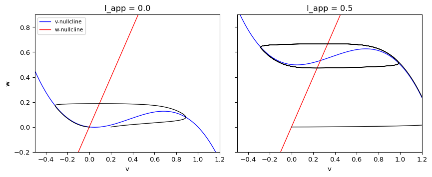
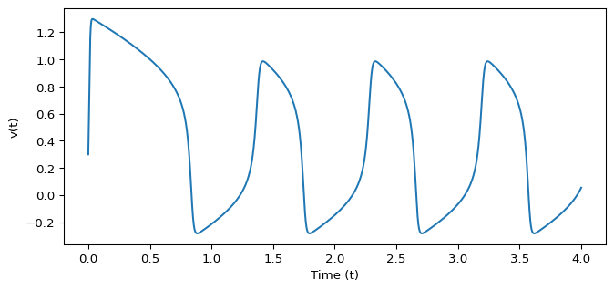

FitzHugh-Nagumo Model
Module 1: Low-Dimensional Dynamics
The FitzHugh-Nagumo model is a two-variable simplification of the Hodgkin-Huxley equations that keeps excitability and spiking (FitzHugh 1961; Nagumo, Arimoto, and Yoshizawa 1962). The version used in this course is
\[\begin{aligned} \epsilon \dot v &= f(v) - w + I_{\text{app}}, \\ \dot w &= v - \gamma w, \end{aligned} \tag{1}\]
with the cubic
\[ f(v) = v (1 - v)(v - \alpha), \qquad 0 < \alpha < 1 . \]
\(v\) is the fast variable (membrane potential), \(w\) the slow recovery variable, \(I_{\text{app}}\) an applied current, and \(\epsilon \ll 1\) sets the separation of time scales.
Nullclines and geometry
\[ \dot v = 0 \;\Longrightarrow\; w = f(v) + I_{\text{app}}, \qquad \dot w = 0 \;\Longrightarrow\; w = \frac{v}{\gamma}. \]
The cubic \(v\)-nullcline and the straight \(w\)-nullcline organize the flow. Away from the cubic, \(\dot v\) is of order \(1/\epsilon\), so trajectories move almost horizontally. Near the outer branches of the cubic they drift slowly (Strogatz 2024, sec. 7.5).
- If the nullclines cross on an outer branch of the cubic, the fixed point is stable and the system is excitable (see Excitability).
- If they cross on the middle branch, the fixed point is unstable and the system produces a relaxation oscillation.
Increasing \(I_{\text{app}}\) shifts the cubic upwards and moves the crossing from the left branch to the middle branch.
Implement the vector field
Exercise
Complete the FitzHugh-Nagumo vector field Equation 1. Remember to divide the \(v\) equation by \(\epsilon\).
def fitzhugh_nagumo(t, vw, i_app=0.5, gamma=0.5, alpha=0.1, epsilon=0.01):
v, w = vw
fv = # TODO: cubic nonlinearity
dvdt = # TODO
dwdt = # TODO
return np.array([dvdt, dwdt])
Solution
def fitzhugh_nagumo(t, vw, i_app=0.5, gamma=0.5, alpha=0.1, epsilon=0.01):
v, w = vw
fv = v * (1 - v) * (v - alpha)
dvdt = (fv - w + i_app) / epsilon
dwdt = v - gamma * w
return np.array([dvdt, dwdt])This is amlab/odes_2d/fitzhugh_nagumo.py, which also contains an interactive animation.
Because \(1/\epsilon = 100\), the problem is mildly stiff. Limit the step with max_step or use method="LSODA" so that the solver does not step over the fast jumps.
Time series
Follow the CDIMA pipeline again: solve trajectories, inspect the phase plane, compute nullclines, and then animate the motion. Figure 2 shows the fast variable \(v(t)\) in the oscillatory regime.

The time trace and the phase plane explain the same phenomenon from two viewpoints.
- Some initial conditions return directly to equilibrium.
- Others produce a large transient spike before recovery.
- In the oscillatory regime, every initial condition ends on the same limit cycle.
Interpret the parameters
- Smaller \(\epsilon\) makes the jumps faster relative to the slow drift.
- \(I_{\text{app}}\) moves the system between rest, excitability and repetitive firing.
- \(\gamma\) and \(\alpha\) change the slope of the \(w\)-nullcline and the position of the cubic, and therefore where the nullclines intersect.
Exercise
For \(\alpha = 0.1\), \(\gamma = 0.5\), find the fixed point for \(I_{\text{app}} = 0\) and show that it is the only one.
Solution
Fixed points satisfy \(v/\gamma = f(v)\), that is \(2v = v(1-v)(v - 0.1)\). One root is \(v = 0\). The others solve \((1 - v)(v - 0.1) = 2\), i.e. \(v^2 - 1.1v + 2.1 = 0\), whose discriminant \(1.21 - 8.4\) is negative. So \((0, 0)\) is the only fixed point.
Exercise
Change the initial condition and \(I_{\text{app}}\) and watch how the time series changes. Use \(I_{\text{app}} = 0\) and \(I_{\text{app}} = 0.5\), and start from \((v, w) = (0.05, 0)\) and \((0.3, 0)\). Connect what you see to the nullclines in Figure 1.
Solution
For \(I_{\text{app}} = 0\) the fixed point \((0, 0)\) sits on the left branch of the cubic. The start at \(v = 0.05\) lies left of the middle branch and decays straight back to rest. The start at \(v = 0.3\) lies right of the middle branch, so \(v\) jumps to the right branch, drifts up, jumps back and returns to rest: one spike. For \(I_{\text{app}} = 0.5\) the crossing is on the middle branch, and both starts end on the same limit cycle with repeated spikes.
for i_app in [0.0, 0.5]:
for v0 in [0.05, 0.3]:
s = solve_ivp(fitzhugh_nagumo, (0, 4), [v0, 0.0], args=(i_app, gamma, alpha, eps), max_step=0.002)
late = s.t > 2
print(f"I_app = {i_app}, v0 = {v0}: max v = {s.y[0].max():.2f}, "
f"range of v for t > 2 = {np.ptp(s.y[0][late]):.2f}")I_app = 0.0, v0 = 0.05: max v = 0.05, range of v for t > 2 = 0.00
I_app = 0.0, v0 = 0.3: max v = 0.92, range of v for t > 2 = 0.00
I_app = 0.5, v0 = 0.05: max v = 1.30, range of v for t > 2 = 1.27
I_app = 0.5, v0 = 0.3: max v = 1.30, range of v for t > 2 = 1.27Next
FitzHugh, Richard. 1961. “Impulses and Physiological States in Theoretical Models of Nerve Membrane.” Biophysical Journal 1 (6): 445–66. https://doi.org/10.1016/S0006-3495(61)86902-6.
Nagumo, Jin-ichi, Suguru Arimoto, and Shuji Yoshizawa. 1962. “An Active Pulse Transmission Line Simulating Nerve Axon.” Proceedings of the IRE 50 (10): 2061–70. https://doi.org/10.1109/JRPROC.1962.288235.
Strogatz, Steven H. 2024. Nonlinear Dynamics and Chaos: With Applications to Physics, Biology, Chemistry, and Engineering. Chapman; Hall/CRC.